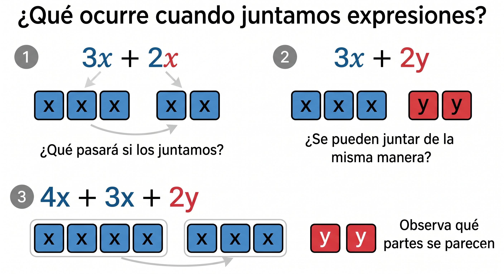
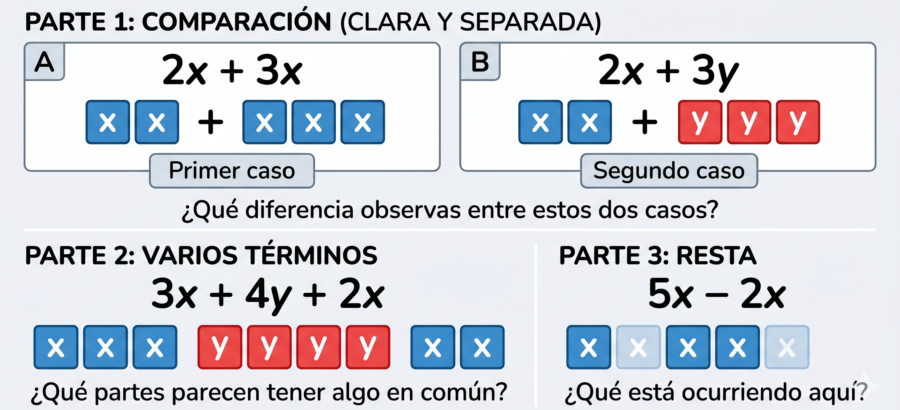
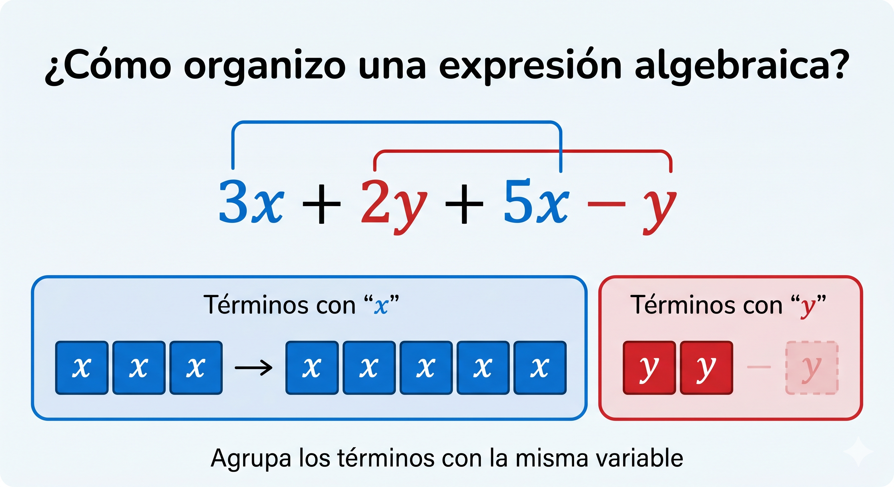

8°
EXPLORACIÓN
Situación inicial: ¿Se pueden combinar?
En el colegio se está organizando una jornada deportiva. Cada grupo de estudiantes aporta materiales para diferentes actividades.
Observa las siguientes situaciones:
1. Un grupo lleva:
- 3 balones de fútbol
- 2 balones de baloncesto
Otro grupo lleva:
- 5 balones de fútbol
- 4 balones de baloncesto
Responde:
★ 1. ¿Cómo podrías representar la cantidad de balones de fútbol usando una expresión?
★ 2. ¿Cómo representarías los balones de baloncesto?
3. Si se juntan los materiales de los dos grupos, ¿qué harías para saber el total de cada tipo?
4. ¿Se pueden juntar todas las cantidades sin distinguir el tipo de balón? Explica.
2. Observa las siguientes expresiones:
3x + 2y
5x + 4y
Responde:
★ 1. ¿Qué crees que representa la letra x? ¿y la letra y?
★ 2. ¿Qué partes de las expresiones parecen “parecidas” entre sí?
3. Si quisieras juntar ambas expresiones, ¿qué harías?
4. ¿Qué partes no podrías juntar directamente? ¿Por qué?
3. Ahora observa:
- 4x + 3x
- 5y + 2y
- 6x + 2y
Responde:
★ 1. ¿En cuáles casos parece más sencillo “juntar” las cantidades?
2. ¿Qué tienen en común las expresiones que sí puedes combinar fácilmente?
3. ¿Qué ocurre en el caso de 6x + 2y? Explica con tus palabras.
Observa con atención las siguientes expresiones y fíjate en lo que ocurre al intentar juntarlas.

4. Situación contextual (educación financiera)
Un estudiante tiene:
- 2x pesos ahorrados en una alcancía
- 3x pesos en su cuenta
Otro estudiante tiene:
- 4x pesos en su cuenta
Responde:
★ 1. ¿Cómo representarías el total de dinero del primer estudiante?
★ 2. ¿Cómo representarías el total de dinero entre los dos estudiantes?
3. ¿Qué partes de las expresiones puedes juntar?
4. ¿Qué crees que significa “sumar expresiones” en este contexto?
ANALIZA
Analizo relaciones entre expresiones
1. Observa cuidadosamente:
a) 2x + 3x
b) 2x + 3y
Responde:
★ 1. ¿En cuál de los dos casos te parece más sencillo unir las cantidades?
★ 2. Explica por qué.
3. ¿Qué diferencia encuentras entre las letras que aparecen en cada expresión?
2. Analiza las siguientes combinaciones:
a) 4x + 2x + 3x
b) 5y + 2y + 6y
c) 3x + 4y + 2x
Responde:
★ 1. ¿Qué partes podrías juntar en cada caso?
★ 2. ¿Cómo decidir qué se puede combinar y qué no?
3. Explica con tus palabras qué criterio estás usando.
3. Ahora observa:
a) 7x − 3x
b) 6y − 2y
c) 5x − 2y
Responde:
★ 1. ¿Qué cambia cuando aparece el signo “−”?
★ 2. ¿Qué crees que significa restar en estas expresiones?
3. ¿En qué casos puedes operar directamente y en cuáles no?
Compara las siguientes expresiones y analiza qué relaciones puedes identificar entre sus partes.

4. Analizo una afirmación
Un estudiante dice:
“En las expresiones algebraicas se puede sumar o restar todo sin importar las letras.”
Responde:
★ a) ¿Estás de acuerdo o no?
b) Escribe un ejemplo que apoye tu respuesta.
c) Explica en qué casos sí se pueden combinar términos y en cuáles no.
5. Comparo y reflexiono
Observa:
a) 3x + 5x
b) 3x + 5
c) 3x + 5y
Responde:
★ 1. ¿Qué diferencias encuentras entre las tres expresiones?
2. ¿En cuál crees que el resultado es más fácil de expresar?
3. Explica tu razonamiento.
CONOCE ALGO NUEVO
1. ¿Qué son los términos semejantes?
En una expresión algebraica, los términos semejantes son aquellos que:
- Tienen la misma variable,
- Tienen el mismo exponente en esa variable.
Esto significa que representan la misma clase de cantidad, aunque cambie el número que los acompaña.
Ejemplos de términos semejantes
- 3x, 5x, −2x → misma variable (x) y mismo exponente (1)
- 4y², −7y² → misma variable (y) y mismo exponente (2)
- 6, −3, 10 → son constantes (también son semejantes entre sí)
Ejemplos de términos NO semejantes
- 3x y 2y → variables diferentes
- 5x y 5x² → mismo símbolo, pero distinto exponente
- 4x y 10 → uno tiene variable y el otro no
2. ¿Por qué se pueden sumar o restar términos semejantes?
Los términos semejantes se pueden sumar o restar porque representan la misma cantidad repetida.
Por ejemplo:
2x + 3x significa:
“2 veces una cantidad x” más “3 veces esa misma cantidad x”
Por lo tanto:
2x + 3x = 5x
3. Suma de términos semejantes
Para sumar términos semejantes:
Paso 1: Identificar los términos semejantes
Paso 2: Sumar los coeficientes (los números)
Paso 3: Conservar la parte literal (la variable)
Ejemplo 1
4x + 3x
Paso 1: Ambos tienen x → son semejantes
Paso 2: 4 + 3 = 7
Paso 3: Se conserva la x
Resultado:
4x + 3x = 7x
Ejemplo 2
5y² + 2y²
Paso 1: Ambos tienen y² → son semejantes
Paso 2: 5 + 2 = 7
Paso 3: Se conserva y²
Resultado:
5y² + 2y² = 7y²
4. Resta de términos semejantes
La resta sigue el mismo procedimiento, teniendo en cuenta el signo.
Ejemplo 3
6x − 2x
Paso 1: Son semejantes
Paso 2: 6 − 2 = 4
Paso 3: Se conserva la x
Resultado:
6x − 2x = 4x
Ejemplo 4
3a − 5a
Paso 1: Son semejantes
Paso 2: 3 − 5 = −2
Paso 3: Se conserva la a
Resultado:
3a − 5a = −2a
5. Expresiones con varios términos
Cuando hay varios términos, se agrupan los semejantes.
Ejemplo 5
3x + 2y + 5x − y
Paso 1: Agrupar términos semejantes
(3x + 5x) + (2y − y)
Paso 2: Operar cada grupo
8x + y
Resultado final:
3x + 2y + 5x − y = 8x + y
Observa cómo se organizan los términos dentro de una expresión antes de simplificarla.

6. ¿Qué pasa si los términos no son semejantes?
Los términos que no son semejantes no se pueden combinar, por lo que se mantienen en la expresión.
Ejemplo:
4x + 3y
No se puede simplificar más.
7. Conexión con equivalencia de expresiones
Cuando sumamos o restamos términos semejantes, estamos construyendo expresiones equivalentes, es decir, expresiones que representan la misma cantidad de manera diferente.
Ejemplo:
2x + 3x es equivalente a 5x
ACTIVIDADES DE APRENDIZAJE
ACTIVIDAD 1. Identifico términos semejantes
Paso 1: Observa cada grupo de términos
Paso 2: Identifica cuáles son semejantes
Paso 3: Escríbelos agrupados
★ Nivel esencial
1. Identifica los términos semejantes en cada caso:
a) 3x, 5x, 2y
b) 4a, −2a, 7b
c) 6, −3, 2x
d) 5y², 3y², 4y
Nivel intermedio
2. Agrupa los términos semejantes:
a) 2x + 3y + 5x
b) 4a − 2b + 6a
c) 7m + 3n − 2m
d) 5x² + 2x + 3x²
Nivel de profundización
3. Escribe una expresión con:
- Dos términos semejantes
- Un término que no sea semejante
Luego explica por qué los agrupaste de esa forma.
ACTIVIDAD 2. Sumo términos semejantes
Paso 1: Identifica los términos semejantes
Paso 2: Suma los coeficientes
Paso 3: Conserva la variable
★ Nivel esencial
1. Resuelve:
a) 3x + 2x
b) 5y + 4y
c) 6a + 3a
d) 8m + 2m
Nivel intermedio
2. Simplifica:
a) 4x + 3x + 2x
b) 7y + 5y + y
c) 6a + 2a + 3a
d) 9m + 4m + 2m
Nivel de profundización
Si terminas antes:
3. Explica con tus palabras:
¿Por qué 3x + 2x es igual a 5x?
(No escribas solo la respuesta, explica el proceso).
ACTIVIDAD 3. Resto términos semejantes
Paso 1: Identifica los términos semejantes
Paso 2: Ten en cuenta el signo
Paso 3: Realiza la operación
★ Nivel esencial
1. Resuelve:
a) 7x − 3x
b) 9y − 4y
c) 5a − 2a
d) 10m − 6m
Nivel intermedio
2. Simplifica:
a) 8x − 3x − 2x
b) 10y − 4y − y
c) 7a − 2a − 3a
d) 12m − 5m − 4m
Nivel de profundización
Si terminas antes:
3. Explica:
¿Por qué 3a − 5a da un resultado negativo?
ACTIVIDAD 4. Sumo y resto expresiones
Paso 1: Identifica términos semejantes
Paso 2: Agrúpalos
Paso 3: Simplifica
★ Nivel esencial
1. Simplifica:
a) 3x + 2y + 5x
b) 6a + 4b − 2a
c) 7m + 3n − 4m
d) 5x + 2y − y
Nivel intermedio
2. Simplifica:
a) 4x + 3y + 2x − y
b) 6a − 2b + 3a + b
c) 8m + 2n − 5m − n
d) 7x² + 3x + 2x² − x
Nivel de profundización
Si terminas antes:
3. Construye una expresión que tenga:
- Al menos 4 términos
- Dos grupos de términos semejantes
Luego simplifícala paso a paso.
ACTIVIDAD 5. Analizo y justifico
★ Nivel esencial
1. Determina si es correcto o incorrecto:
a) 3x + 2y = 5xy
b) 4a + 3a = 7a
c) 5x² + 2x² = 7x⁴
Explica cada respuesta.
Nivel intermedio
2. Corrige los errores:
a) 6x + 2y = 8x
b) 3a + 5a = 8a²
c) 4x² + 2x = 6x³
Nivel de profundización
Si terminas antes:
3. Un estudiante dice:
“Si los números se suman, las letras también se deben multiplicar.”
¿Estás de acuerdo? Explica con un ejemplo.
ACTIVIDAD 6. Aplicación contextual
En una campaña ambiental del colegio (PRAE):
Un grupo recolecta:
- 3x bolsas de reciclaje plástico
- 2y bolsas de cartón
Otro grupo recolecta:
- 5x bolsas de plástico
- y bolsas de cartón
★ Nivel esencial
1. Escribe una expresión que represente el total recolectado.
2. Simplifica la expresión.
Nivel intermedio
3. Explica qué representan los términos x y y en este contexto.
Nivel de profundización
Si terminas antes:
4. Si x = 4 y y = 2, calcula el total de bolsas recolectadas.
Explica el procedimiento.
REFERENCIAS BIBLIOGRÁFICAS
Ministerio de Educación Nacional. (2006). Estándares básicos de competencias en matemáticas. Bogotá, Colombia: MEN.
Ministerio de Educación Nacional. (2016). Derechos básicos de aprendizaje en matemáticas: Básica secundaria. Bogotá, Colombia: MEN.
Ministerio de Educación Nacional. (2017). Vamos a aprender Matemáticas 8°. Bogotá, D.C., Colombia: Ediciones SM, S.A.
Colegio Integrado Simón Bolívar. (2026). Plan de área de aritmética grado octavo. Documento institucional.